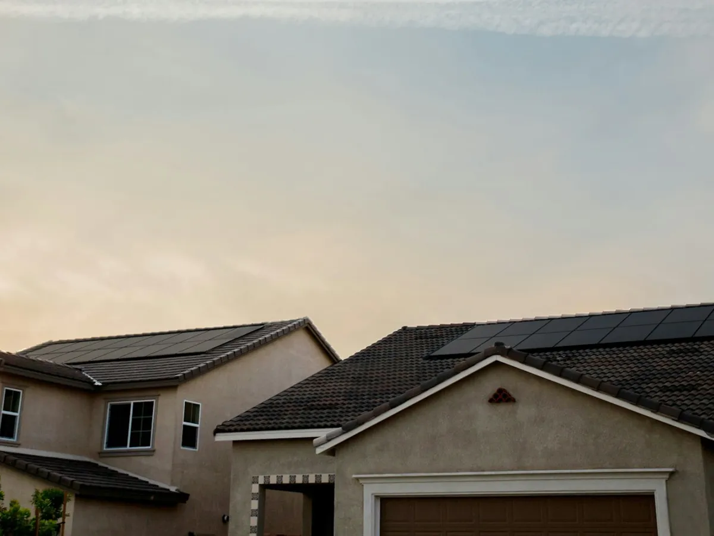
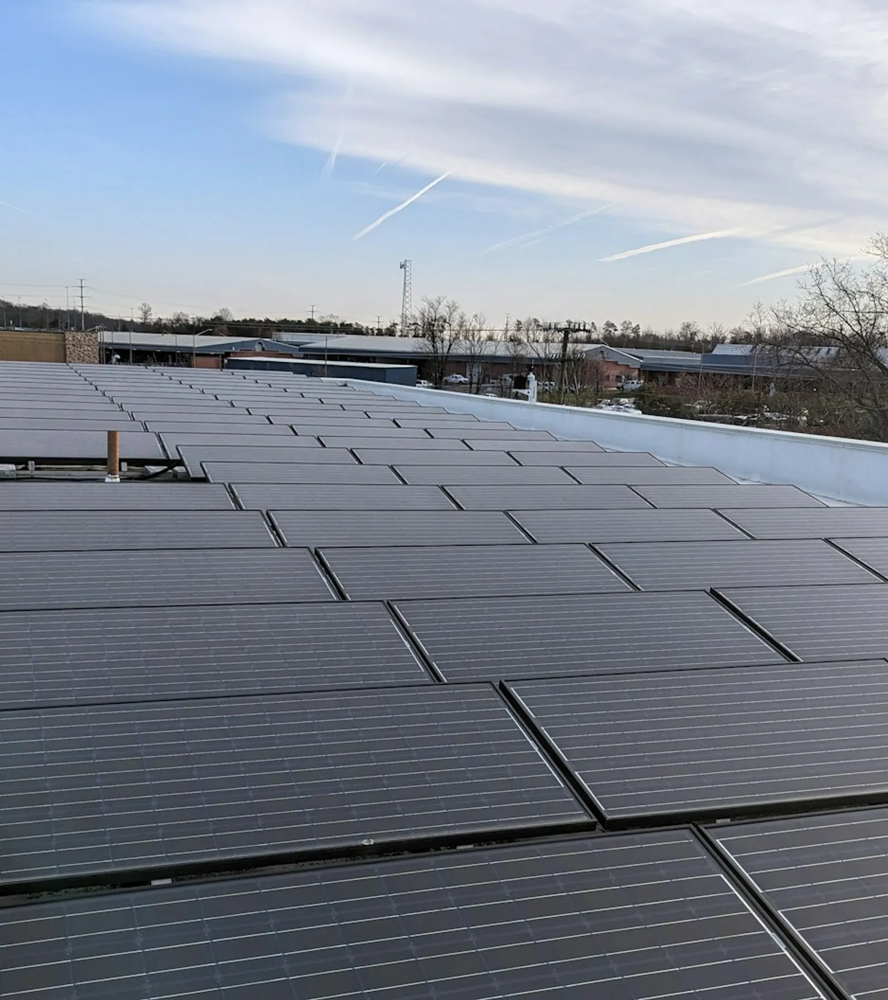
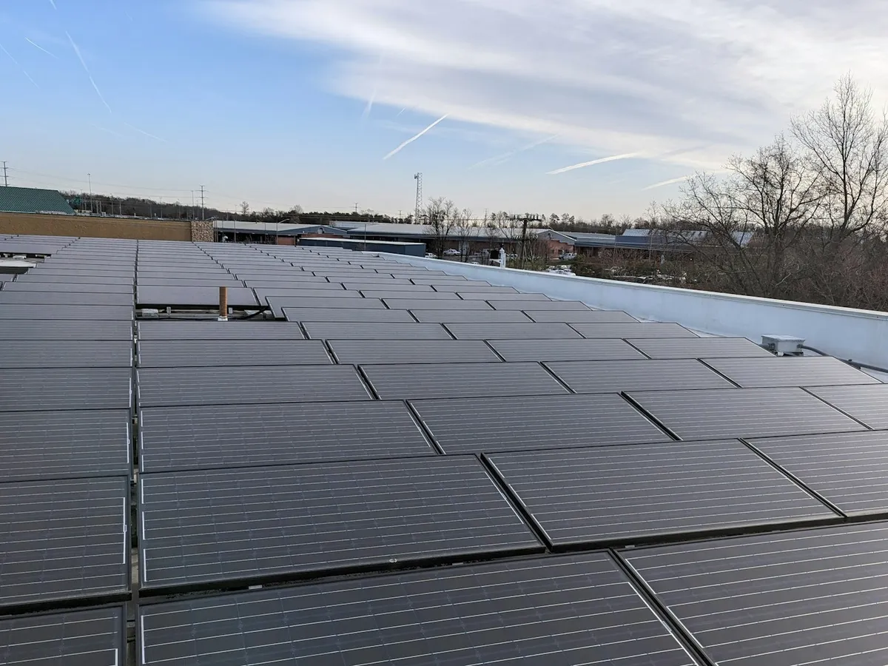
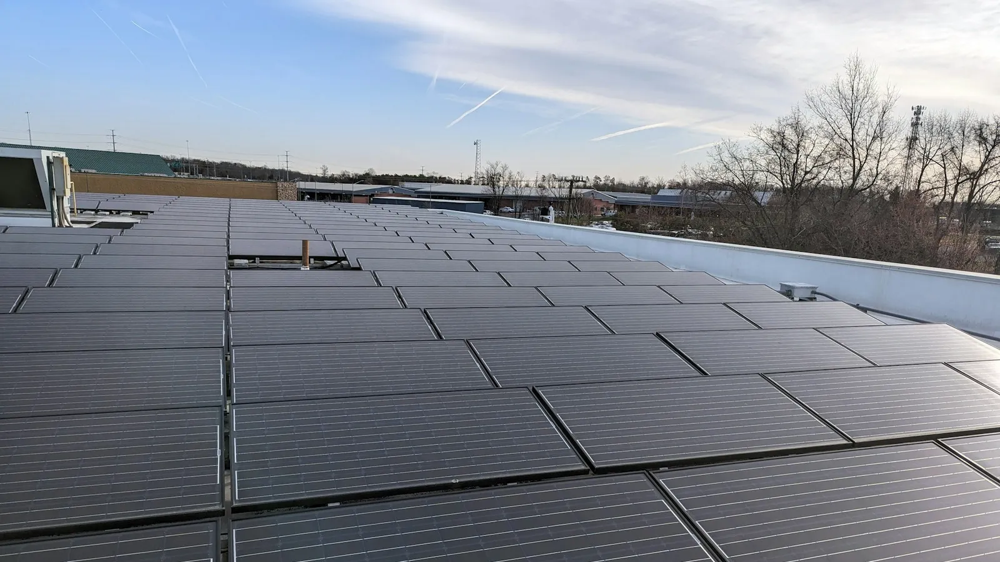

PARA A SUA CASA01Energia que faz
Energia que faz
parte da sua vida.
Sistemas fotovoltaicos residenciais dimensionados a partir do seu consumo e das condições do seu imóvel.
Quero energia solar em casaO FUTURO TEM UMA FONTE.
Soluções em energia solar fotovoltaica para sua casa e sua empresa. Do projeto à instalação, com a Jund Solar.

01 / NOVAS POSSIBILIDADES
Seu telhado pode fazer mais pelo seu imóvel.
Gerar parte da energia que você consome é uma maneira de aproveitar um recurso renovável e buscar mais eficiência no dia a dia.
Tudo começa com uma análise: seu consumo, as características do imóvel e a viabilidade do investimento. Sem soluções prontas. Com um projeto para a sua realidade.
Descubra por onde começar02 / SOLUÇÕES
O mesmo sol.
Um projeto diferente para cada necessidade.

PARA A SUA CASASistemas fotovoltaicos residenciais dimensionados a partir do seu consumo e das condições do seu imóvel.
Quero energia solar em casa
PARA O SEU NEGÓCIOProjetos para empresas, comércios e indústrias, com avaliação técnica e financeira para apoiar a sua decisão.
Quero uma solução para minha empresa03 / DO PRIMEIRO CONTATO À GERAÇÃO
Entenda o caminho para transformar
a luz do sol em energia no seu imóvel.
Entendemos sua conta de energia, suas necessidades e as condições do imóvel.
Dimensionamos o sistema e avaliamos os equipamentos e a viabilidade da solução.
Implantamos o sistema fotovoltaico de acordo com o projeto definido.
Conduzimos a homologação e a conexão junto à distribuidora, conforme as etapas aplicáveis.
Monitoramento e manutenção conforme as necessidades do sistema e o escopo contratado.
04 / ENERGIA COM PROPÓSITO
Mais do que instalar painéis.
É repensar como seu imóvel usa energia.
Aproveite a luz do sol para produzir eletricidade no seu próprio imóvel.
Parte do seu consumo pode ser atendida pela energia produzida pelo sistema, reduzindo a energia demandada da rede.
Uma análise técnica e financeira ajuda a planejar o investimento e entender os custos envolvidos.
Equipamentos bem dimensionados e manutenção adequada contribuem para o desempenho ao longo da vida útil.

A ENERGIA MUDA. A SUA ESCOLHA TAMBÉM.
05 / POR QUE JUND SOLAR
Cada imóvel tem uma história.
Seu projeto de energia também.
A Jund Solar desenvolve soluções fotovoltaicas para residências e empresas, da concepção do projeto à instalação e conexão do sistema.
Consumo, espaço disponível e viabilidade orientam a solução.
Projeto, seleção de equipamentos e implantação do sistema fotovoltaico.
Um canal aberto para entender as etapas e esclarecer suas dúvidas.
O PRÓXIMO PASSO É SIMPLES.
Envie sua conta de energia e descubra o potencial do seu imóvel.
A equipe analisa seu consumo e conversa com você sobre as possibilidades para sua casa ou empresa.
Enviar conta para análise Converse com a Jund Solar pelo WhatsApp.06 / SUAS DÚVIDAS, COM CLAREZA
Informação para dar o próximo
passo com mais confiança.
Os painéis convertem a luz solar em eletricidade. O inversor transforma essa energia para uso no imóvel. O projeto define os equipamentos e a forma de integração à instalação elétrica.
Sim. Os painéis podem gerar energia com luz difusa, mas a produção costuma ser menor do que em dias de sol. Clima, sombras, orientação e época do ano influenciam o resultado.
Depende do consumo, da potência dos módulos e das condições do local. A análise considera área disponível, orientação, sombreamento e estrutura, sem estimar a quantidade de painéis antes de avaliar o imóvel.
Sim. A Jund Solar oferece soluções para empresas. O projeto precisa considerar o perfil de consumo, a instalação elétrica, o espaço disponível e a viabilidade técnica e financeira.
O ponto de partida é o histórico de consumo da conta de energia. Ele é analisado junto às características do imóvel e à disponibilidade de luz solar para definir uma solução adequada.
Sim. Monitoramento, inspeções e limpeza quando necessária ajudam a preservar o desempenho. A frequência depende do local, das condições dos equipamentos e das orientações dos fabricantes. Serviços técnicos devem ser realizados por profissionais qualificados.
Em um sistema conectado à rede, sim. Geração própria não significa independência total nem fornecimento garantido durante uma queda de energia. A equipe explica a configuração indicada para o seu projeto.
Fale com a equipe pelo WhatsApp e envie uma conta recente de energia. Informe também a cidade e se o imóvel é residencial ou empresarial. A Jund Solar orientará os próximos passos.
Escolher um contatoVAMOS CONVERSAR
Jund Solar Energia Renovável
Jundiaí, SP